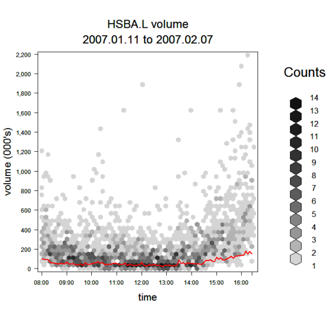

One of the most common criticisms of algorithmic strategies is their inability to cope with fluctuations in price and, perhaps more importantly, market volume and order books. If the push towards wider coverage of less traded assets is to be successful, then this criticism has to be addressed.
This problem is closer to home than many think. The ubiquitious market volume curve shown for VWAP executions does not show the volatility in market volume that exists for even large capitalisation assets. As an illustration, the chart below shows every market volume, in five minute time bins, for HSBC over a twenty day period. This data is aggregated into hexagonal plots which count the frequency of occurence in the sample. Also shown, in red, is a typical trade plan for working a reasonably large order in HSBC, at 25% of average daily volume.

The chart clearly shows how extreme market volume fluctuations can be. In this case it also shows how, around the middle of the day, the plan edges close to representing the total market volume on many of the recent trading days (the darkest hexagons). It is essential for strategies to dynamical defer planned quantities and to exploit opportunities where there is more volume than expected.
At their inception, algorithmic strategies had little comprehension beyond the target benchmark and order book. More banks are now including explicit constraints into their strategies; for example a participation strategy with an (average or strict) limit price; or a VWAP with a maximum participation constraint if liquidity evaporates. This innovation is due to client demand and illustrates the breadth of institutional orderflow now being directed to the machines.
Of course, these constraints raise other issues. Aside from a system design that can handle constraints consistently across different strategies, the principal questions arise with customer advice and reporting, especially in a post-MiFID world. Questions such as: How likely will the order be fully filled given recent price movements? Or, if we take advantage of market volume now, how much will be deviate from VWAP?
Execution is a global service at the larger banks and algorithic execution, handling increasingly diverse portfolios, must likewise become an efficient global execution process. The world's exchanges are built on a few platforms although all have their idiosyncracies. Algorithmic systems which have these differences expressed in code rather than data will face a combinatorial explosion as features are added, such as limit prices (above). The same can be said, perhaps more so, for expanding algorithmic execution coverage from equities to other assets, such as futures, fixed income and fx. These are non-trivial systems engineering issues.